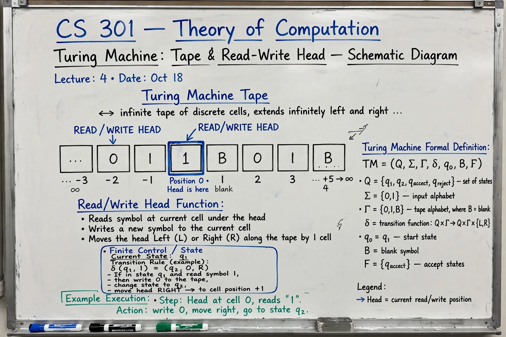

Theoretical computer science
| Theoretical computer science | |
|---|---|
 | |
| Founders | Alan Turing, Alonzo Church, Kurt Gödel |
| Key question | P versus NP |
| Parent field | Computer science |
Theoretical computer science (TCS) is the branch of computer science and mathematics concerned with the abstract and mathematical foundations of computation: what can be computed at all, and what can be computed efficiently. It grew out of work by Alan Turing, Alonzo Church, and Kurt Gödel in the 1930s, before electronic computers existed.
Major areas
- Computability theory — Turing machines, the halting problem, decidability and the Church–Turing thesis.
- Computational complexity theory — classification of problems by the time and space they require; the classes P, NP, PSPACE, and the great open question of P versus NP, one of the Millennium Prize Problems.
- Algorithms and data structures — design and rigorous analysis of efficient procedures.
- Automata and formal languages — finite automata, context-free grammars, and the Chomsky hierarchy, with applications to compilers and verification.
- Cryptography — protocols whose security rests on computational hardness, including public-key systems and zero-knowledge proofs.
- Quantum computation — algorithms such as Shor's factoring algorithm that exploit quantum mechanics.
- Computational learning theory, coding theory, and algorithmic game theory.
History
Turing's 1936 paper "On Computable Numbers" introduced the universal machine and proved the halting problem undecidable; Church's lambda calculus gave an equivalent definition of computability. Complexity theory emerged in the 1960s (Hartmanis and Stearns), and the Cook–Levin theorem (1971) identified NP-complete problems, formalising the intuition that some problems are intrinsically hard. Major honours in the field include the Turing Award, the Gödel Prize, and the Knuth Prize.
Impact
Although abstract, TCS underlies practical computing: type theory shapes programming languages, complexity results guide algorithm engineering, and cryptographic theory secures the internet. Its flagship conferences include STOC, FOCS, and SODA.